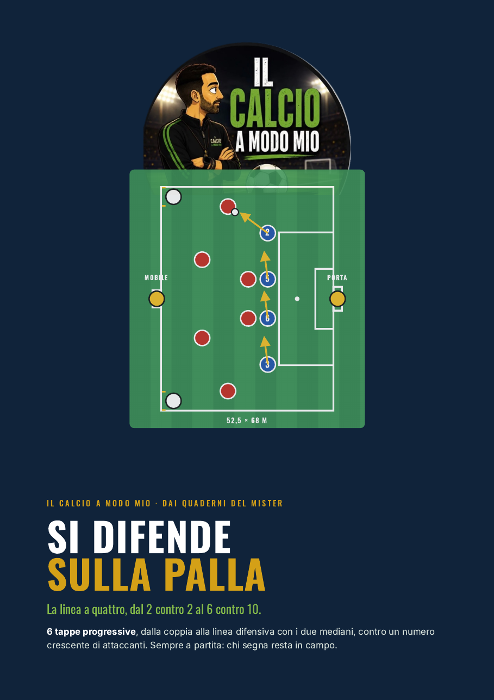
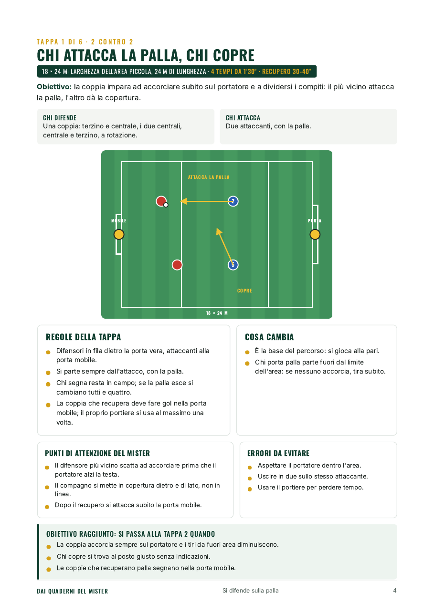

Non sugli uomini.
La linea a quattro in 6 tappe, dal 2 contro 2 al 6 contro 10.
Campo, regole, cosa cambia, punti di attenzione del mister, errori da evitare e quando passare alla tappa successiva.
Le regole complete le trovi nel PDF.
